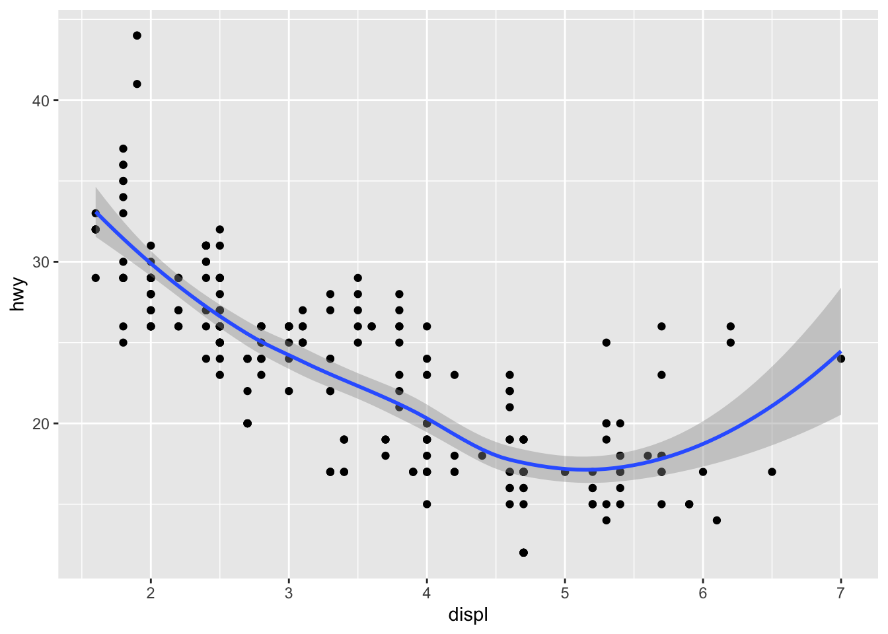

ggplot(mpg, aes(x = displ, y = hwy)) +geom_point() +geom_smooth()

思考题
What is the curve? What is the shadow around it?
三变量
The author will update this section if he remembers it…
Source Code
---title: "初探数据可视化 (从入门到放弃)"author: "Multa-Head Wang Zhikun"date: "2025-06-24"toc: trueformat: html: html-math-method: katex code-tools: true self-contained: false code-fold: trueexecute: warning: false cache: true freeze: auto---# 基本概念现在有下面这张表格，记录了钻石相关的一些信息：```{r load-data}library(tidyverse)diamonds <- diamonds |>filter(carat <3)knitr::kable(head(ggplot2::diamonds))```其中: - **变量（Variable）**：列, carat、cut、color、clarity、depth、table、price、x、y、z - 连续变量（Continuous Variable）：carat、depth、table、price、x、y、z - 离散变量（Discrete Variable）：cut、color、clarity - 分类变量（Categorical Variable）：cut、color、clarity- **观测（Observation）**：行, 每个钻石的记录- **值（Value）**：单元格, 如某个钻石的carat为1.5- **数据框（Data Frame）**：整个表格---这是数据分析的整体流程:::: {.callout-important title="思考题"}which part of the data analysis process is the most interesting? Which part is the most boring?:::# 单变量(Univariate Variable)## 分类变量(Categorical Variable)对于分类变量，我们主要展示其比例构成。### 饼图(Pie)不得不说，饼图是最常见的单个分类变量可视化方式，那么直接，又那么简单。```{r Univariate-Categorical-Variable-Pie}library(tidyplots)energy |>tidyplot(y = energy, color = energy_source) |>add_pie()```### 甜甜圈图(Donut)甜甜圈图是饼图的变种，去掉了中间的空心部分，形成一个甜甜圈形状。```{r Univariate-Categorical-Variable-Donut}energy |>tidyplot(y = energy, color = energy_source) |>add_donut()```### 堆叠条形图(Barstack)堆叠条形图是另一种常见的单个分类变量可视化方式~~(我不喜欢,我觉得它不直观)~~```{r}energy |>tidyplot(y = energy, color = energy_source) |>add_barstack_absolute()```## 连续性变量（Continuous Variable）对于连续变量, 我们主要关注其变化、分布、趋势、典型值、异常值### 直方图(Histogram)下图是 `r nrow(diamonds)` 个钻石的克拉数分布，X轴是克拉数，Y轴是频数。```{r Univariate-Continuous-Variable-Histogram-Binwidth-0.5}ggplot(diamonds, aes(x = carat)) +geom_histogram(binwidth =0.5) ```::: {.callout-important title="思考题"}What do you notice from the histogram?:::让我们改变一下 binwidth 的大小，看看会有什么不同。```{r Univariate-Continuous-Variable-Histogram-Binwidth-0.1}ggplot(diamonds, aes(x = carat)) +geom_histogram(binwidth =0.1) ```好像有些不一样了，继续改变 binwidth 的大小：```{r Univariate-Continuous-Variable-Histogram-Binwidth-0.01}ggplot(diamonds, aes(x = carat)) +geom_histogram(binwidth =0.01) ```**Amazing!**::: {.callout-important title="思考题"}Why are there more diamonds at whole carats and common fractions of carats? Why are there more diamonds slightly to the right of each peak than there are slightly to the left of each peak?:::### 密度曲线图(Density)密度曲线图可以帮助我们更好地理解数据的分布情况。下图是钻石克拉数的密度曲线图，X轴是克拉数，Y轴是分布密度,```{r Univariate-Continuous-Variable-Density}ggplot(diamonds, aes(x = carat)) +geom_density()```::: {.callout-important title="思考题"}What is the density?What is the relationship between the density curve and the histogram above?:::### 箱线图(Boxplot)箱线图是用来展示数据分布的图形，主要用于显示数据的中位数、四分位数、异常值等信息。::: {.callout-important title="思考题"}How to interpret this boxplot?:::### 小提琴图(Violin)箱线图很好,但仅展示了四分位数等,而小提琴图则显示了数据的分布密度,可以更好地展示数据的分布情况。```{r Univariate-Continuous-Variable-Violin}ggplot(diamonds |>filter(cut =="Fair"), aes(x = cut, y = carat)) +geom_violin() ```小提琴图显示分布密度### 小提琴图(Violin) + 箱线图(Boxplot)还有一种把小提琴图和箱线图结合的方式，近年来在科研界比较流行。```{r Univariate-Continuous-Variable-Violin-Boxplot}ggplot(diamonds |>filter(cut =="Fair"), aes(x = cut, y = carat)) +geom_violin() +geom_boxplot(width =0.1, fill ="white")```::: {.callout-important title="思考题"}How to interpret this plot?:::# 双变量(Bivariate Variable)## 分类-数值变量(A categorical and a numerical variable)### 折线图(Line)下面是不同切割质量的钻石的价格情况的折线图```{r Univariate-Continuous-Variable-Line}ggplot(diamonds, aes(x = price, color = cut)) +geom_freqpoly(binwidth =500, linewidth =0.75)```**不好看!**::: {.callout-important title="思考题"}Why is this plot ugly?:::### 密度曲线图(Density)当各组数据差得较多时,纵轴用count不太合适,会造成摩天大厦+小平层,不如把纵轴改为density:```{r Univariate-Continuous-Variable-Density-Freqpoly}ggplot(diamonds, aes(x = price, y =after_stat(density), color = cut)) +geom_freqpoly(binwidth =500, linewidth =0.75)```好多了吧 ●'◡'● (好吧,还是有点丑)分面(facet)会好一点吗? ```{r Univariate-Continuous-Variable-Density-Facet}ggplot(diamonds, aes(x = price, fill = cut)) +geom_density() +facet_wrap(~ cut, nrow =1) +theme(legend.position ="none")```### 山脊图(Ridge)近年来还流行一种“山脊图(Ridge)”，它可以更好地展示多个分布的重叠情况。```{r Univariate-Continuous-Variable-Ridge}library(ggridges)ggplot(diamonds, aes(x = price, y = cut, fill = cut)) +geom_density_ridges(alpha =0.5) +theme(legend.position ="none")```### 并排箱线图(Boxplot)箱线图也是一种直观的可视化方式```{r Univariate-Continuous-Variable-Boxplot}ggplot(diamonds, aes(x = cut, y = price)) +geom_boxplot()```或许还可以上点颜色, 让它显得花里胡哨:```{r Univariate-Continuous-Variable-Boxplot-Color}ggplot(diamonds, aes(x = cut, y = price, fill = cut)) +geom_boxplot(outlier.shape =NA) +theme(legend.position ="none") +coord_cartesian(ylim =c(0, 15000))```等等,**这不对吧**,cut越好的钻石价格应该越高才对啊!!!怎么回事?::: {.callout-important title="思考题"}Why does the boxplot show that the price of diamonds with "Fair" cut is higher than those with "Ideal" cut?:::### 折线图(Line)还有一种策略,是算出数值的平均数(或其他特征),然后绘制折线图:```{r Univariate-Continuous-Variable-Line-Mean}diamonds |>group_by(cut) |>summarise(price =mean(price)) |>ggplot(aes(x = cut, y = price, color = cut)) +geom_point() +geom_line(group =1) +theme(legend.position ="none")```## 两个分类变量(Two categorical variables)虽然听起来有点离谱,但有时候确实需要可视化两个分类变量之间的关系.### 点图(Dot)下图是一个点图，展示了钻石的切割质量和颜色之间的关系。点的大小表示组合的数量```{r Univariate-Categorical-Variable-Dot}ggplot(diamonds, aes(x = cut, y = color)) +geom_count()```好看吗? 好像还行。### 色块图(Tile)让我们再来换一种表达形式——色块图,色块的颜色表示组合的数量.```{r Univariate-Categorical-Variable-Tile}diamonds |>count(color, cut) |>ggplot(aes(x = color, y = cut)) +geom_tile(aes(fill = n))```::: {.callout-important title="思考题"}Which one do you prefer, the dot plot or the tile plot? Why?:::### 堆叠条形图(Barstack)又到了~我不喜欢的~堆叠条形图了.下面两个图是钻石的颜色和切割质量的堆叠条形图，分别展示了每种颜色的钻石在不同切割质量下的数量分布。```{r Univariate-Categorical-Variable-Barstack}ggplot(diamonds, aes(x = color, fill = cut)) +geom_bar()ggplot(diamonds, aes(x = color, fill = cut)) +geom_bar(position ="fill")```::: {.callout-important title="思考题"}What is the difference between the two stacked bar charts?:::### 分面面包圈图(Facet Donut)其实就是多个面包圈图组合在一起,用ppt也能做.```{r Univariate-Categorical-Variable-Facet-Donut}df <-read_csv("https://tidyplots.org/data/electricity-generation-in-Germany.csv")df |> dplyr::filter(year %in%c(2003, 2013, 2023)) |>tidyplot(y = energy, color = energy_type) |>add_donut() |>remove_legend_title() |>split_plot(by = year, ncol =3, widths =50, heights =50) &theme(legend.position ="bottom") ```## 两个数值变量(Two numerical variables)### 散点图(Scatter)下图是钻石的克拉数和价格之间的散点图，X轴是克拉数，Y轴是价格。```{r Univariate-Continuous-Variable-Scatter}ggplot(diamonds, aes(x = carat, y = price)) +geom_point()```黑色一大片,简直丑死了!来调整一下点的透明度吧```{r}ggplot(diamonds, aes(x = carat, y = price)) +geom_point(alpha =0.02)```稍微好一点,但是还有一些更好的策略.### 分格散点图(bin)```{r Univariate-Continuous-Variable-Scatter-Bin}ggplot(diamonds, aes(x = carat, y = price)) +geom_bin2d()ggplot(diamonds, aes(x = carat, y = price)) +geom_hex()```### 排序箱线图(Order Boxplot)把其中一个变量分成若干个区间,然后在每个区间内绘制箱线图,可以更好地展示数据的分布情况.```{r Univariate-Continuous-Variable-Scatter-Order-Boxplot}ggplot(diamonds, aes(x = carat, y = price)) +geom_boxplot(aes(group =cut_width(carat, 0.1)))```::: {.callout-important title="思考题"}When do you think a Order Boxplot Plot is useful?:::### 散点图(Scatter) + 线性回归(Linear Regression)换一个数据较少的例子,这是一个散点图，展示了汽车的发动机排量和高速公路油耗之间的关系。红色的点表示2座跑车。```{r Univariate-Continuous-Variable-Scatter-Linear-Regression}ggplot(mpg, aes(x = displ, y = hwy)) +geom_point() +geom_point(data = mpg |>filter(class =="2seater"),color ="red" ) +geom_point(data = mpg |>filter(class =="2seater"),shape ="circle open", size =3, color ="red" )```我们还可以在散点图上添加线性回归线,来展示两者之间的关系.```{r Univariate-Continuous-Variable-Scatter-Linear-Regression-Line}ggplot(mpg, aes(x = displ, y = hwy)) +geom_point() +geom_smooth()```::: {.callout-important title="思考题"}What is the curve? What is the shadow around it?:::# 三变量The author will update this section if he remembers it...

 ::: {.callout-important title=“思考题”} How to interpret this boxplot? :::
::: {.callout-important title=“思考题”} How to interpret this boxplot? :::